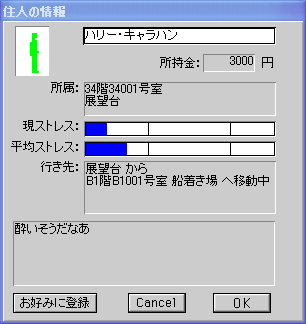
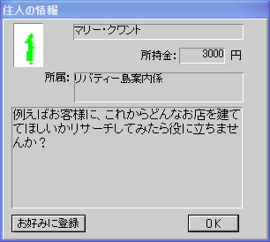
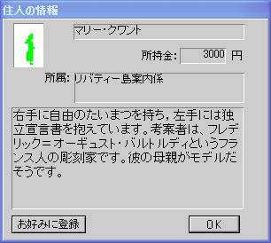
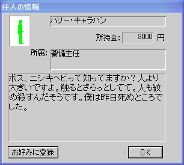
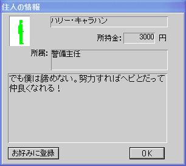
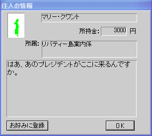
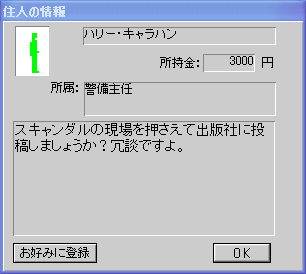
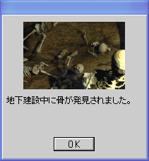

朝、ハリーとマリーが船着き場から出勤してくる。彼らは18階までエレベーターで登り、そこから女神内部の螺旋階段を使って展望台までやってくる。彼らが展望台に着いたら虫眼鏡で展望台をクリックして2人の話を聞いてみよう。
---
会話は双方、繰り返して聞いてあげてください。さらに日付が変わったらもう一度聞いてあげてください。会話が変化する場合があります。
☆→☆☆：総人口が800人以上。来訪するＶＩＰが満足して帰ること。
開始早々ムービーが始まる。
2枚目の画像がハリー、3枚目の画像がマリーである。プレイヤーはこの2人の物語にビルのオーナーとして関わることになる。
まず、画像のようにホテル、エレベータを設置する。部屋はツインで25部屋。詳しくはホテルの建て方を参照。
---
自由の女神専用エレベーターは18階まで伸ばせる位置に配置すること。
メンテナンスエレベーターは真ん中に配置すること。17階のフロアが開いてしまうがそこにはどうやってもメンテナンスエレベータは設置できない。
船着き場と展望台チケット売り場を設置する。船着場とロビーはエスカレーターで接続する。
---
リバティー島は孤島なので船着場を設置しないと住人が入ってこない。
船着場：５０００万円
展望台チケット売り場×２：２００万円
エスカレーター：２００万円
ツインタワー （´；ω；｀）
朝、ハリーとマリーが船着き場から出勤してくる。彼らは18階までエレベーターで登り、そこから女神内部の螺旋階段を使って展望台までやってくる。彼らが展望台に着いたら虫眼鏡で展望台をクリックして2人の話を聞いてみよう。
---
会話は双方、繰り返して聞いてあげてください。さらに日付が変わったらもう一度聞いてあげてください。会話が変化する場合があります。
ハリーがマリーに一目ぼれのようです。

時間が来るとマリーとハリーはまた船で帰っていきます。

_、_
（ ,_ﾉ` )y━･~~~
_、_
（ ,_ﾉ` )y━･~~~
---
この会話は専門書店設置フラグ。
_、_
（ ,_ﾉ` )y━･~~~
_、_
（ ,_ﾉ` )y━･~~~

ホテルを増築。既存のツインブロックの下にもう１つツインブロックを建設。
---
この２ブロック目の建設は資金が不足するために困難を極める。以下の点を抑えておくといい。
・エレベーター
まずエレベーターを最大まで増やす。停止階は１階、５階、１１階×２、１８階×２に設定する。次に休日、平日共に５～１２時までを下り優先に設定する。（２枚目の写真）
メンテナンスエレベーターの籠は１つだけでいい。
・ホテル
ホテルの部屋の評価は非常に下がりやすい。ホテル客の部屋に対する評価手段には２段階ある。まずチェックインする際に行われるもの。これは宿泊客が部屋に泊まった時にわかる。部屋に明かりが着いた時、評価が青から黄色に変わる場合がそれである。この評価はあまり気にしなくていい。問題はチェックアウトする際に行われる評価である。この評価は非常に厳しく場合によっては部屋が再起不能になる可能性もある。４枚目の写真はそのようにして行われた評価である。この場合部屋の評価の回復はまったく行われないため再設置するしかない。
ここまで来るのに約３年はかかると見ていい。速度を高速にして資金をためながら１つずつツインルームを継ぎ足していく。

ｷﾀ━━━(Дﾟ(○=(ﾟ∀ﾟ)=○)Дﾟ)━━━!!
資金がたまってきたので専門書店を設置。すると地下から財宝発見。ホテル建設が捗る。
---
専門書店設置はイベントの進展に不可欠。理由はチャプター12を参照のこと。
専門書店は非常に儲かる。ただ集客力はそれほどでもない。
_、_
（ , ﾉ` ）
＼,; ｼｭﾎﾞｯ
(),
|E|
---
専門書店を設置すると発生する会話。
専門書店は非常に儲かる。ただ集客力はそれほどでもない。
_、_
（ ,_ﾉ` )y━･~~~
---
専門書店を設置すると発生する会話。
---
専門書店を設置し、チャプター２１の会話を聞いた後で発生するイベント。
_、 ∫
（ ,_ノ） ヽ;;..
┗━┛
_、_
（ ,_ﾉ` )y━･~~~
掘り出した財宝の一億円を元にホテルを増築する。写真のように設置。

_、_
（ ,_ﾉ` )y━･~~~
地下街を増設。土産物屋を設置。そこそこ儲かる。
---
設置費：２０００万円
ペットショップを設置。客単価が３万円と馬鹿高い上に集客力がまったくといっていいほどない。休日の日には黒字を確保できることもあるが基本は赤字続きのテナントである。
---
設置費：１０００万円、イベントの進展に必要

_、_
（ ,_ﾉ` )y━･~~~
---
チャプター２７の後に発生
---
ペットショップを設置していてＢＣの会話を聞いた後に発生するイベント。


_、_
（ ,_ﾉ` )y━･~~~
１８階に土産物屋を設置。
---
ここにテナントを設置するとシルエットが消えなくなるバグが発生する可能性がある。
テナントはショップを設置すること。メンテナンスエレベータおよび階段は１８階に接続できないため、☆２になったときにレストランはゴミに埋もれて営業停止状態になってしまう。

_、_
（ , ﾉ` ）
＼,; ｼｭﾎﾞｯ
(),
|E|
ホテルを増築。スイートルームを設置。
---
設置費：１０００万円、イベントの進展に必要。


プレシデンテ！ あなたの敵は増えるばry) (CV: 江原)
---
スイートルームを設置すると出現する会話。すぐにプレジデントが来るわけではない。

_、_
（ ,_ﾉ` )y━･~~~

見つかったからといって何か起きるわけではない。
地下街を増設。ホットドックを設置。客単価が１０００円と安いためあまり儲からない。新宿のコーヒーショップと似ている。
地下街を増設。ジャズクラブを設置。開店時間が１８時からと遅いながら、船の最終便の深夜１２時までやっている。客単価が５０００円で集客力もかなりあるので赤字になることはまずない。
---
設置費３０００万円、イベントの進展に必要
時代を感じる…
スイートルームにお邪魔します。
「ちょっと奥さん怖いんだよね。」
---
シルエットが３つで１つという珍しいタイプ。両脇の人間はボディーガードの方々か。
_、_
（ ,_ﾉ` ） 大統領に関するコメントは無いのかな？
---
ジャズクラブを設置すると発生する会話。ジャズクラブの設置と大統領の予約が同じ日になってしまったためにこのようなことが起こってしまった。
(´・ω:;.:...
---
ジャズクラブを設置していてＢＱの会話の後に発生するイベント。
---
☆彡
☆彡
☆☆になりました。
ここまでのセーブファイル：セーブファイル